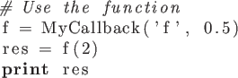
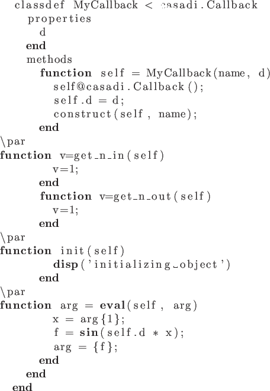
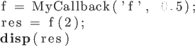
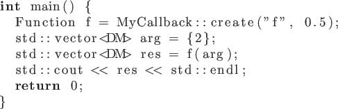
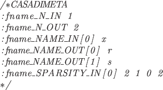
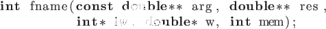
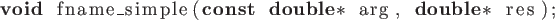

Next: 7. The DaeBuilder class Up: User Documentation for CasADi Previous: 5. Generating C-code
Depending on the circumstances, the user can implement custom Function objects in a number of different ways:
We elaborate on this in the following.
Since FunctionInternal is not considered part of the stable, public API, we recommend against this, unless the plan is to make a contribution to CasADi.
The Callback class provides a public API to FunctionInternal and inheriting from this class has the same effect as inheriting directly from FunctionInternal. Thanks to cross-language polymorphism, it is possible to implement the exposed methods of Callback from either Python, MATLAB or C++.
The derived class consists of the following parts:
get_n_in and get_n_out,
their names using get_name_in and get_name_out
and their sparsity patterns get_sparsity_in and get_sparsity_out.
init function called when the construction is complete.
For a complete list of functions, see the C++ API documentation for Callback.
The usage from the different languages are described in the following.
The implementation should include a constructor, which should call the base class constructor using [language=Python]Callback.__init__(self).
This function can be used as any built-in CasADi function with the important caveat that when embedded in graphs, the ownership of the class will not be shared between all references. So it is important that the user does not allow the Python class to go out of scope while it is still needed in calculations.

MyCallback.m:

This function can be used as any built-in CasADi function, but as for Python, the ownership of the class will not be shared between all references. So the user must not allow a class instance to get deleted while it is still in use, e.g. by making it persistent.

As seen in the example, the derived class should implement a private constructor that is not called directly, but instead via a static create function using the syntax above. This functions returns a Function instance which takes ownership of the created object.
class created this way can be used as any other Function instance, with the create function replacing a conventional constructor:

The following sections expands on this.
fname_incref and fname_decref
are absent, it is assumed that no memory management is needed. If no
names of inputs and outputs are provided, they will be given default names.
Sparsity patterns are in general assumed to be scalar by default, unless the
function corresponds to a derivative of another function (see below), in which
case they are assumed to be dense and of the correct dimension.
Futhermore, work vectors are assumed not to be needed if fname_work has
not been implemented.
The structure of such meta information should be as follows:


with a function with simpler syntax:

Note that _simple needs to appended to the function name. Evaluating
a function with this syntax potentially carries less overhead.
fname by
implementing a function named jac_fname. Similary, you can specify
a function for calculating one forward directional derivative by providing a
function named fwd1_fname, where 1 can be replaced by for 2, 4, 8, 16,
32 or 64 for calculating multiple forward directional derivatives at once.
For reverse mode directional derivatives, replace fwd with adj.
This is an experimental feature.
Contact the CasADi developers directly if you are interested in this feature.
2016-03-23